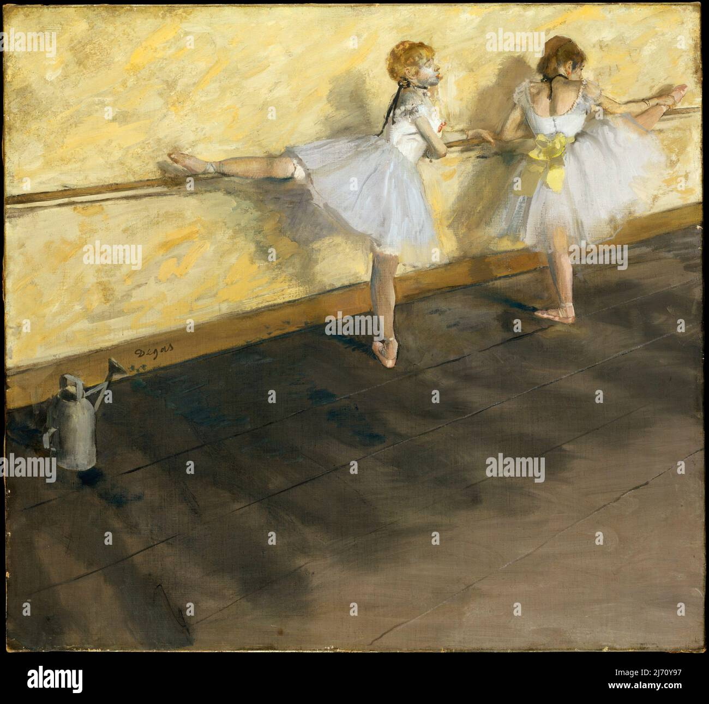

Información General
Ubicación: Londres, Reino Unido
Horario: 10:00 - 17:00
Precio: Entrada gratuita
Colecciones Destacadas
- El sueño de la razón produce monstruos
- Albion rose
- Dancers practising at the barre
Historia y Arquitectura
Fundado en 1753, fue el primer museo nacional público del mundo. Su arquitectura neoclásica, con el gran patio cubierto por una cúpula de vidrio, simboliza la apertura del conocimiento y la cultura mundial.

Obra: El sueño de la razón produce monstruos

Obra: Albion rose

Obra: Dancers practising at the barre